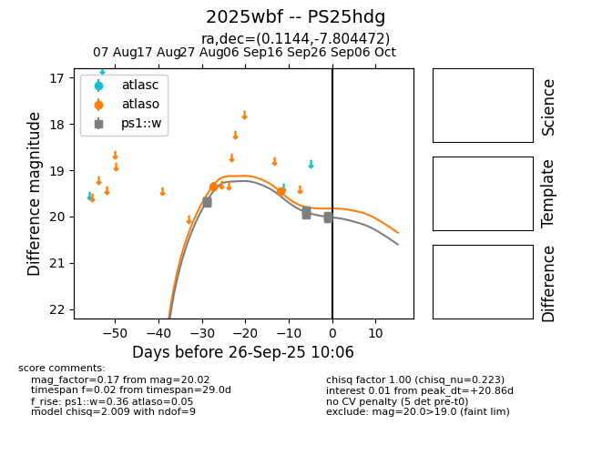
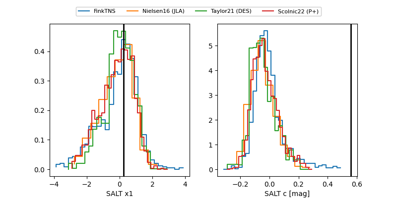

TNS: 2025wbf
YSE: 2025wbf
2025wbf (yse,tns)
PS25hdg (panstarrs)
equatorial (ra, dec) = (0.1144,-7.80447)
galactic (l, b) = (88.5790,-67.21119)


last atlaso=19.46, ps1::w=20.02
2 atlaso, 12 ps1::w detections